Giusto cinque giorni prima a Pasquetta ero sul dirimpettaio M. Cuzzer, fra l'altro in una gite che ricordo con più gioia (sic), complice l'arrivo della primavera e il tripudio di panorami. Dalla cima del Cuzzer, oltre a spiare il canale per salire al M. Àrghine, mi è subito balzato all'occhio il versante Sud del Belepéit, costituito da una paretona bianca strapiombante che i chiusani chiamano cretòn dal Belepéit (d'altronde Belepéit = bila peč = pietra bianca). Ho subito desirato percorrere le cenge alla sua base, ricordandomi di una descrizione che avevo letto a riguardo.
Lasciamo la macchina e partiamo con già in vista una parte del percorso.
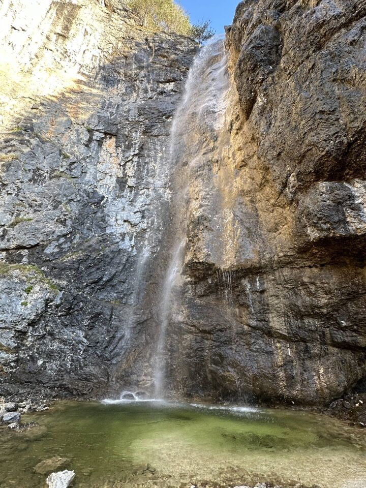In breve imbrocchiamo la traccia giusta anche se in più punti ci viene qualche dubbio (una traccia che si stacca dalla principale - anche se sembra il contrario - penso che porti nel rio Belepéit; mi ero ripromesso di tornare a vedere).
Prima di attaccare la cengia, oltre il rio Belepéit, combiniamo un pasticcio perdendo la traccia e traversando troppo alti all'interno di una sorta di cengia piena di piccoli pini intricatissimi, dove misteriosamente troviamo uno di questi tagliato a metà.
Fra Pasquetta e "oggi" ha nevicato un bel po'! La cosa rovina un po' i piani ma in compenso il contrasto rende l'ambiente davvero bello.
Che gioia quel giorno con l'aria limpida e primaverile!
I monti Crespana, Làvara e Àrghine, innevati; il boscoso monte Pléchie in basso.
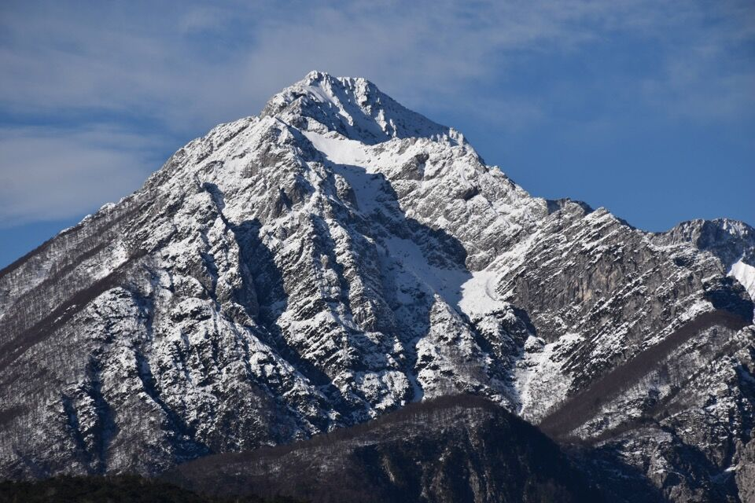Alcuni tratti di cengia sono davvero stupendi.
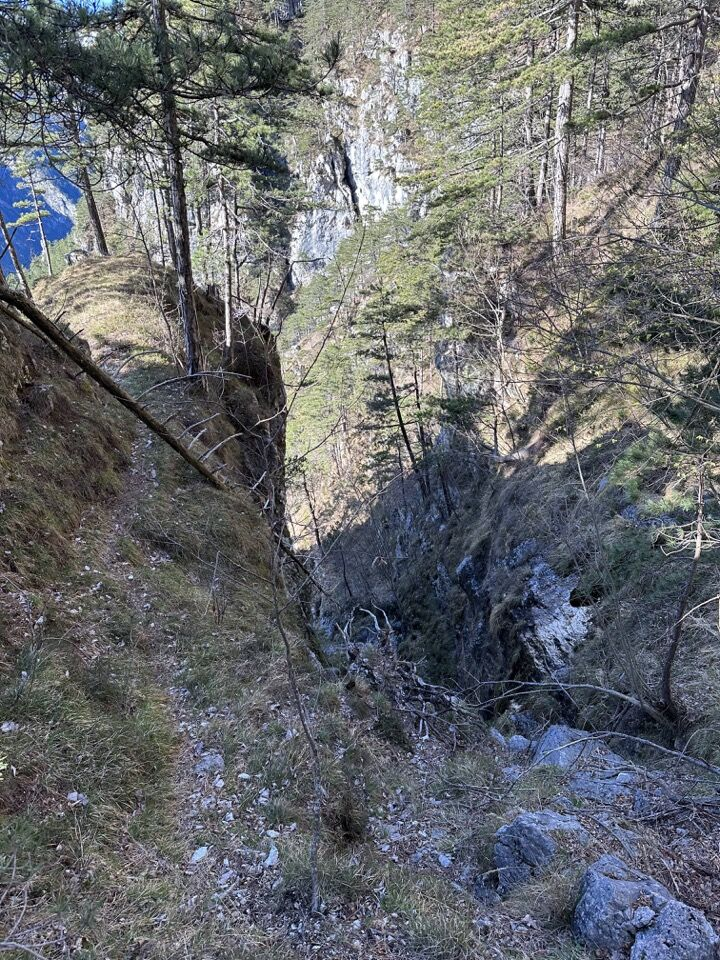Finalmente attraversiamo il rio Belepéit.
Qualche dubbio ci viene, ma la traccia degli animali ce li chiarisce sempre.
Finalmente arriviamo sotto al Cretòn, luogo davvero magnifico, che purtroppo è difficile da immortalare senza grandangolo.
I slips, cioè le ripidissime pale erbose sotto la cresta Plauris - Col Mat (sx); chi è più attento sa riconoscere Pale di Misdì e Palòn dei Zábus a dx.
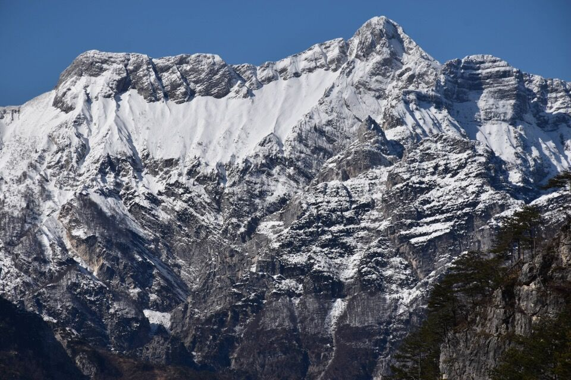Forse una dele foto più belle che ho mai scattato: come un vulcano, il Sart con la cresta Indrinizza!
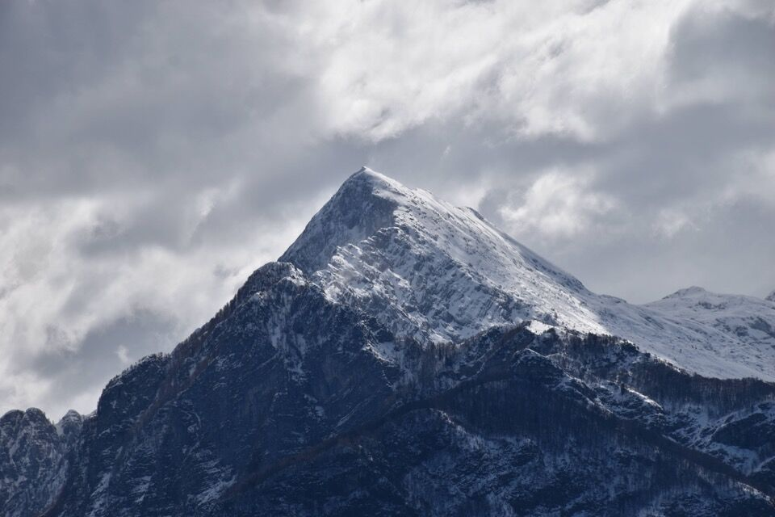Continuiamo la traversata; oltre al cretòn c'è una zona in cui la tracce spariscono, bisogna scendere e risalire e ci vuole intuito.
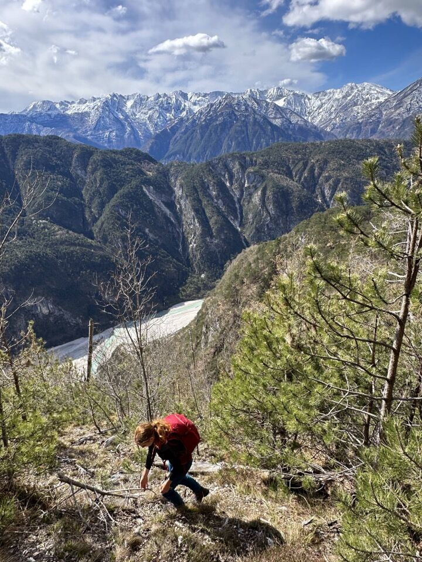Prima del sentiero CAI ci aspettano dei bellissimi tratti su cenge, talvolta strette ma mai difficili.
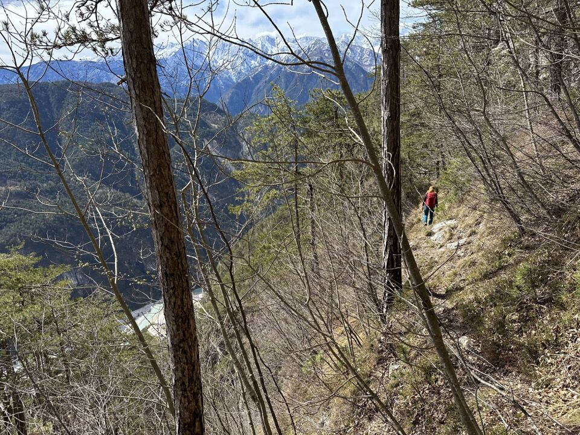Jôf di Misdì e Jovét Blanc ci spiano da lontano... la neve li rende ancora più aspri.
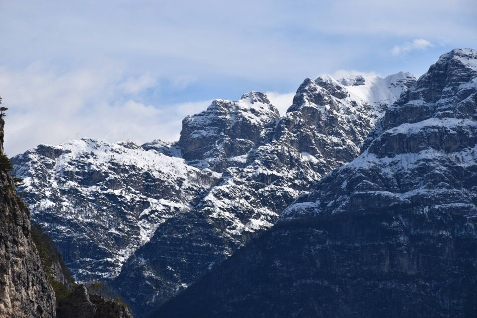 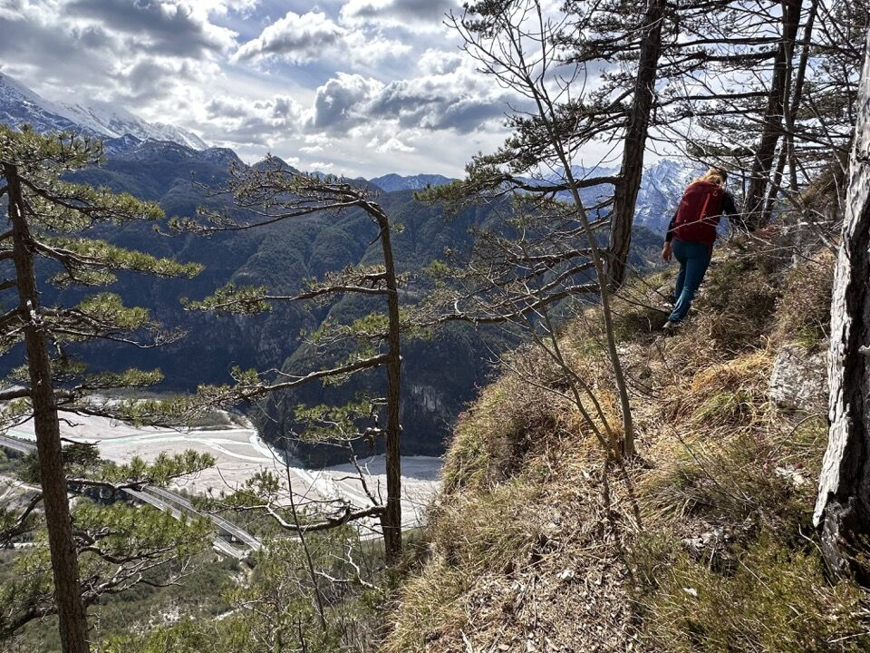L'unico lato negativo di queste escursioni sul versante Sud di queste montagne - come peraltro mi viene in mente il percorso del cengione Sud del Pisimoni - è sentire continuamente il rumore delle macchine...
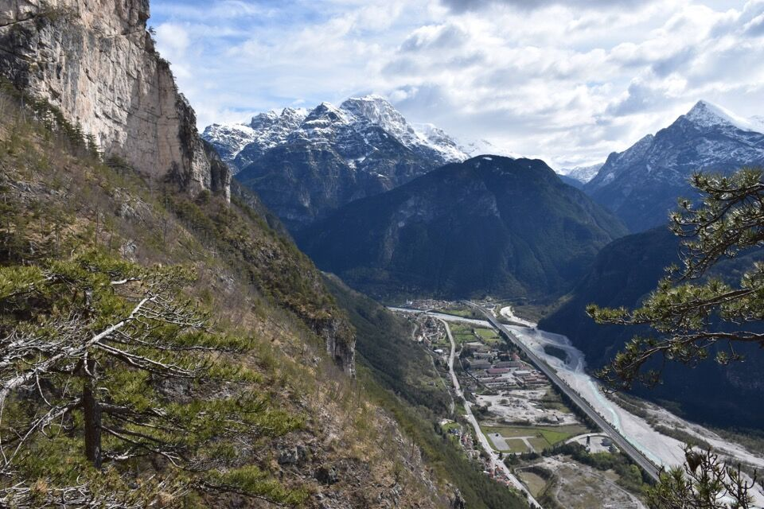In centro foto la costa dei monti Pacoi - Naplis - Agarone, con dietro la dorsale Cjucis - costa Pulize che sale fino alla cima Clapadorie.
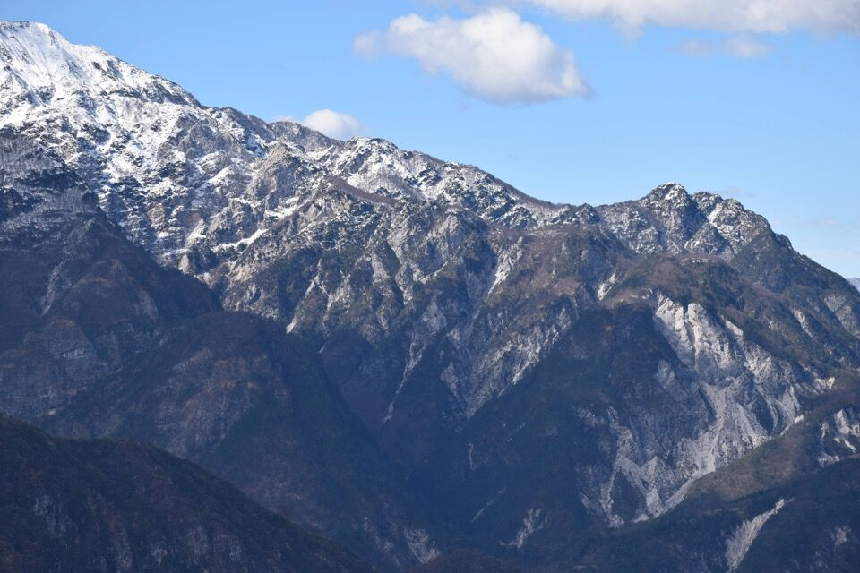La dorsale M. Uarchéc - Punta Salvotis - Palòn dei Zábus, fra i valloni del Resartico (sx) e di Serai (dx).
Chiaramente finita la Sèmide decidiamo si salire in cima al Belepéit; l'ambiente cambia e sembra di tornare in inverno.
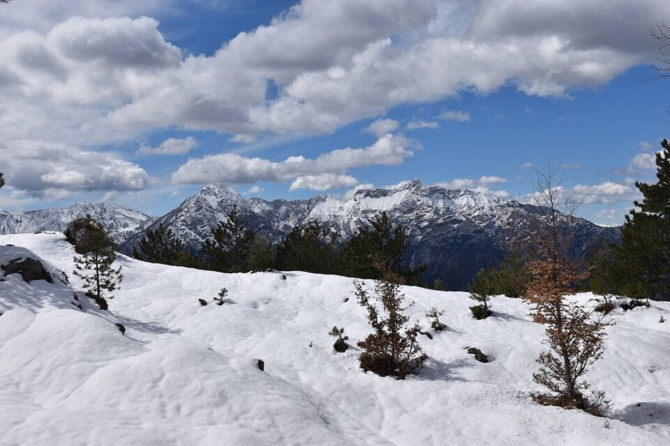Dalla cima verso i Musi e il Cuzzer.
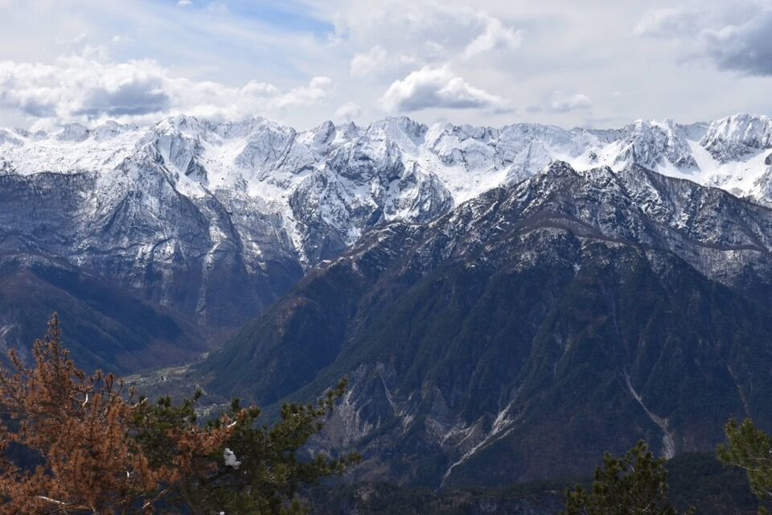Stupenda vista verso il sottogruppo del Cimone: i due valloni sono quelli del rio Lavinâl (sx) e da lis Fontanis (dx). Sotto, la tozza cima dello Jôf di Sclûse.
Magnifica la cima Sud-Est del Cozarèl! A sx, la cima principale (notare quell'ago).
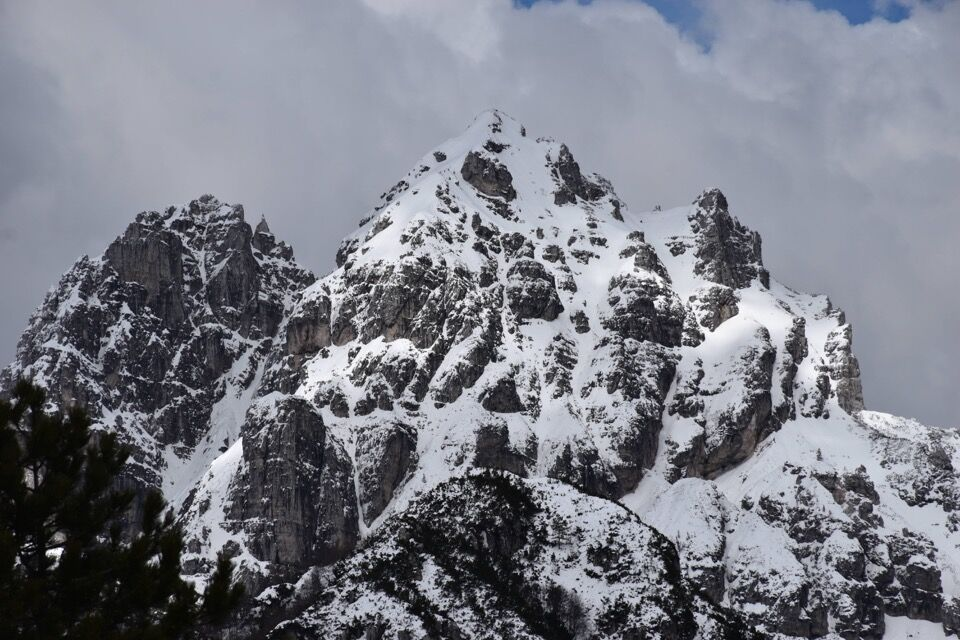Il selvaggio rio da lis Fontanis, chiuso in alto dallo Jovét Blanc. Il percorso della Male Làvare passa sul cengione più alto sotto le cime: a vederlo da qua sembrerebbe una pazzia!
Non a caso Chiusaforte è il comune delle cascate...
Di nuovo a valle.
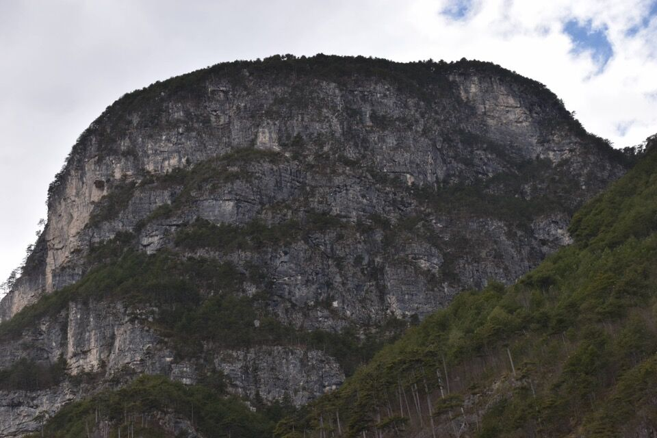